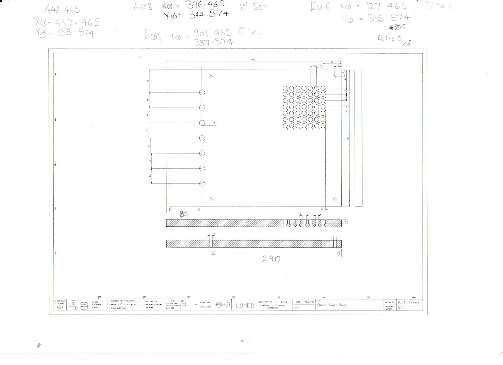
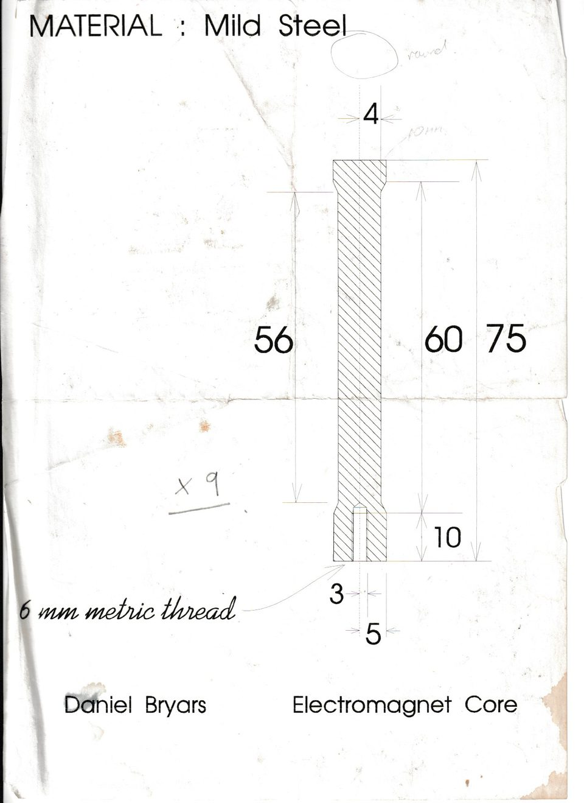
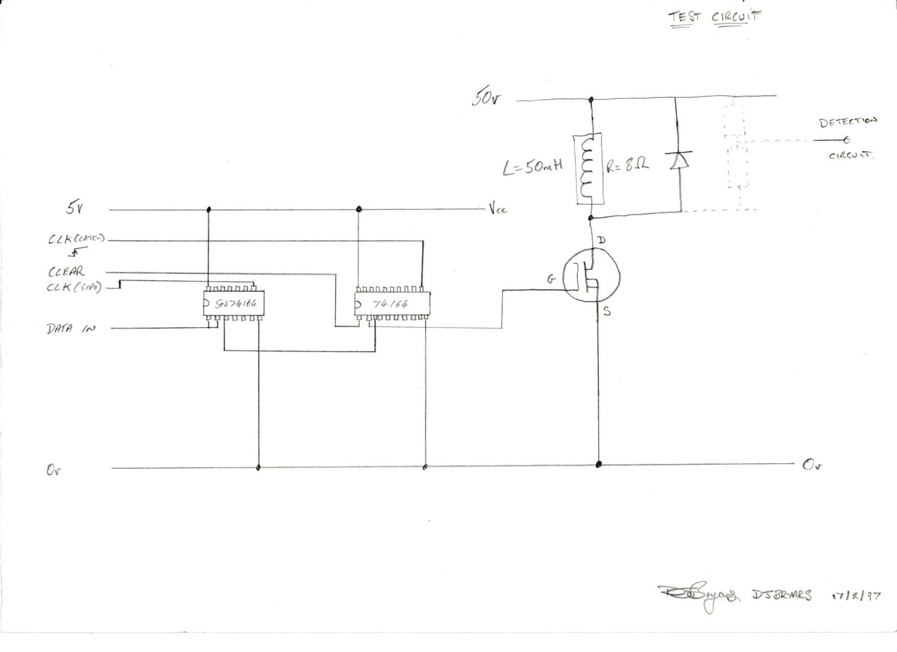
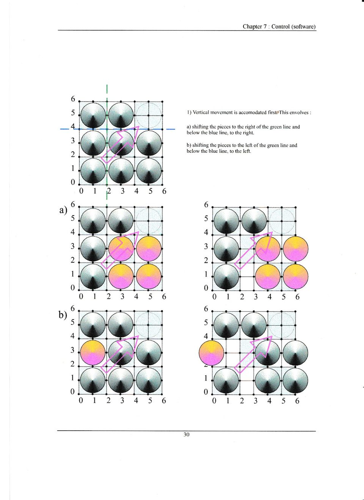
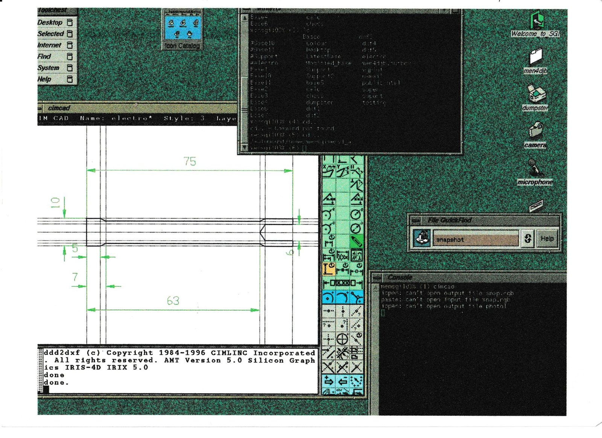

The board
Magnet array below the surface
The clean bit is the top surface. Underneath: coils, wiring and enough current to make the switching circuit worth thinking about.
Mechatronics / electromagnets / 1997
Final-year Mechatronics project at Leeds. A chess board that moved pieces itself, using an array of hand-wound electromagnets under the playing surface.
The scans here are from the final report. Old paper, old CAD, proper 1990s desktop screenshots. Still very much the same problem: make the physical thing do what the software thinks it asked for.

Move chess pieces without a visible mechanism on top of the board. The report breaks the problem into control software, the movement sequence, coil drivers and the physical board.
Early version of a recurring theme: software, electronics and mechanics all agreeing with each other for long enough to move something real.
Report appendix
The report photos show the board, the electronics board and the row of magnets under the playing surface. Not high-resolution, but enough to remember how much copper was involved.

The board
The clean bit is the top surface. Underneath: coils, wiring and enough current to make the switching circuit worth thinking about.
The parts
The drawings are pleasingly literal. Base plate, core dimensions, hole positions. Make the board, then find out if the pieces move.
The control
Report includes Turbo-era CAD screenshots and movement diagrams. Very 1997. Still a recognisable controls problem.









